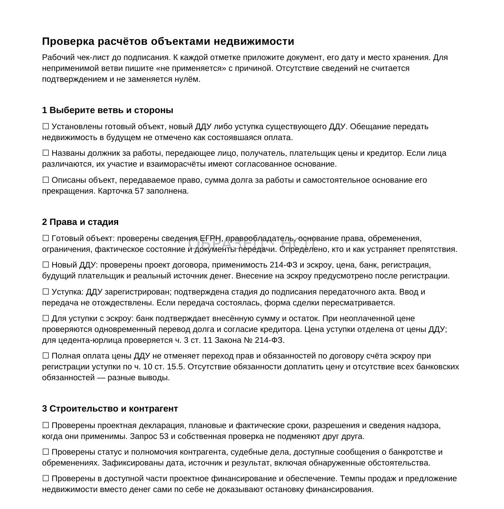
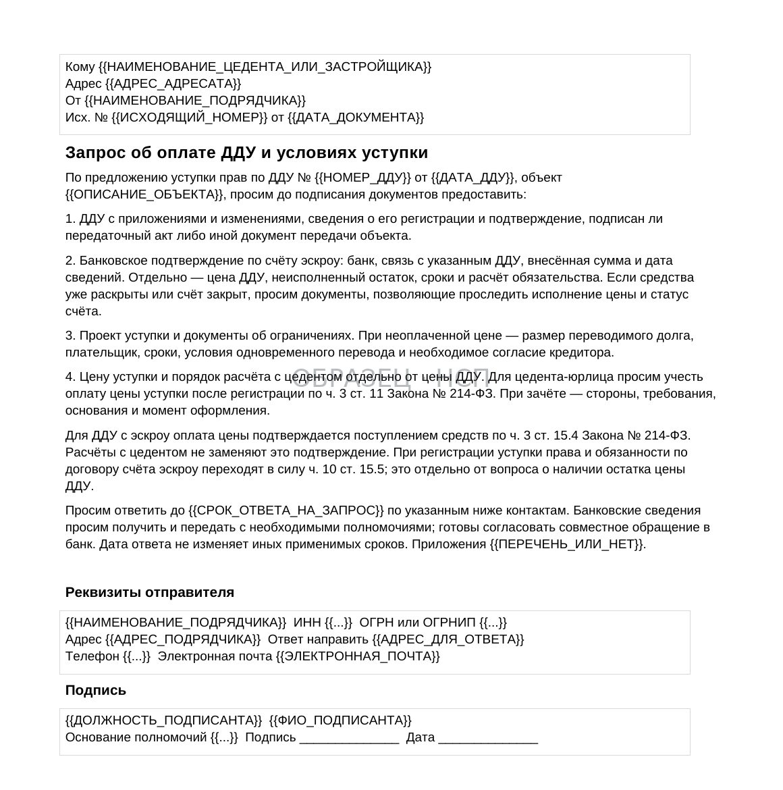
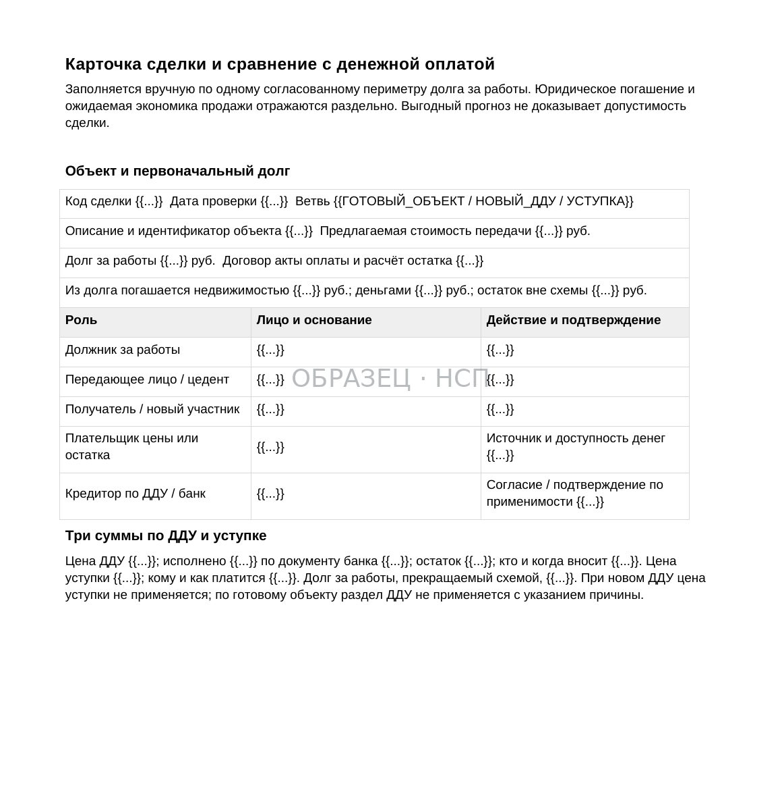
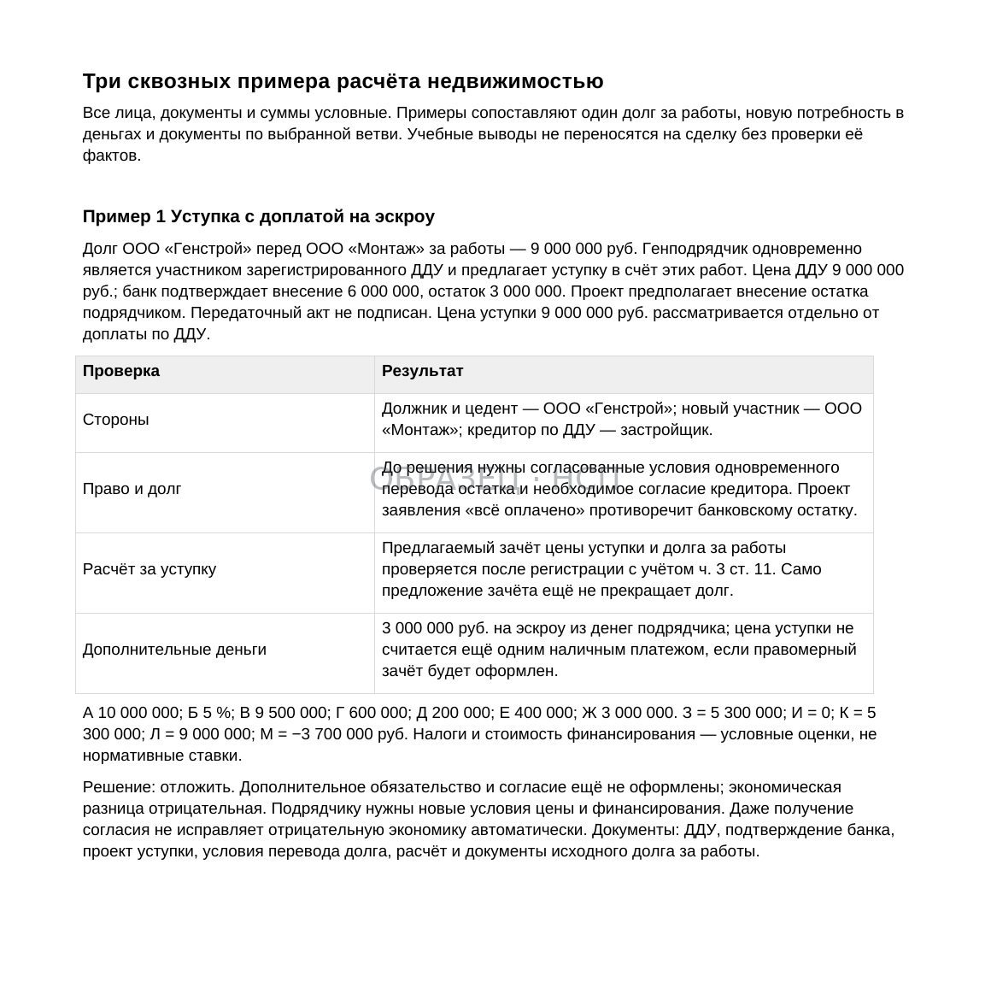

ДОГОВОР / РАСЧЁТЫ НЕДВИЖИМОСТЬЮ
Расчёты за строительные работы объектами недвижимости: как проверить сделку и погашение долга
Обновлено 11 ноября 2026
Как подрядчику оценить предложение получить квартиру, нежилое помещение или машино-место вместо денег, проверить права на объект и определить, когда заказчик действительно исполнит обязательство по оплате работ.
Заказчик предлагает рассчитаться за выполненные строительные работы объектом недвижимости. На первый взгляд предложение может выглядеть выгодным: стоимость квартиры в прайс-листе превышает сумму долга, а подрядчик рассчитывает получить дополнительный доход после её продажи.
Но в таких переговорах легко смешать три разных вопроса: какой объект или право передают, какое обязательство подрядчик принимает на себя и при каком событии долг за строительные работы считается погашенным.
Передача готовой квартиры, заключение нового договора участия в долевом строительстве и уступка прав по уже заключённому ДДУ — юридически разные способы расчётов. Они требуют разных документов, регистрации, проверки оплаты и оценки рисков.
Главное правило: согласовывать такой расчёт нужно по двум независимым направлениям — правовому и экономическому. Право, которое можно получить, не обязательно является активом, который можно быстро и выгодно продать.
1. Установите реальную сумму долга за работы
Прежде чем обсуждать квартиры и стоимость квадратного метра, определите денежное обязательство заказчика.
Подготовьте сверку по конкретному договору: стоимость принятых работ, нерассмотренные акты, дополнительные соглашения, ранее перечисленные деньги, авансы, гарантийные удержания и подтверждённые встречные требования.
Если часть работ не принята или их стоимость оспаривается, обозначьте эти суммы отдельно. Не следует автоматически включать в расчёт недвижимостью объёмы, по которым пока не установлен размер обязательства.
Пример. По актам выполнено работ на 18 млн ₽, заказчик оплатил 8 млн ₽, а ещё 2 млн ₽ являются предметом спора. Прежде чем закрепить «погашение 10 млн ₽ квартирой», нужно определить, какую именно задолженность стороны признают и какое обязательство будет прекращено сделкой.
Результатом должна стать карточка расчёта с указанием договоров, сумм, дат, документов и ответственных лиц. Без неё даже успешно зарегистрированная сделка может оставить разногласия относительно оплаты работ.
2. Определите, какой из трёх вариантов предлагают
Неденежный расчёт возможен по разным юридическим конструкциям.

Вариант А — готовый объект недвижимости. Заказчик либо иное уполномоченное лицо передаёт подрядчику квартиру, помещение или машино-место. Нужно проверить зарегистрированное право собственности отчуждателя, ограничения, основания передачи и порядок государственной регистрации перехода права.
Вариант Б — новый ДДУ. Подрядчику предлагают заключить договор участия в долевом строительстве напрямую с застройщиком. Это обязательство в отношении будущего объекта, а не получение готовой квартиры. Нужно установить условия оплаты и применимость режима счетов эскроу.
Вариант В — уступка прав по существующему ДДУ. Подрядчик приобретает право требования по ранее заключённому договору другого участника долевого строительства. Необходимо проверить сам ДДУ, его регистрацию, оплату, возможность уступки и связанные с ней обязательства.
Отдельно определите назначение помещения. Юридически жилая квартира и нежилое помещение — разные объекты, даже если в рекламе оба называют «апартаментами» или «метрами». Для принятия решения проверьте соответствующие сведения проектной декларации, предмет договора, разрешённое использование и, для готового объекта, назначение в ЕГРН.
Фраза «дадим вам квартиру» не описывает ни один из этих механизмов с достаточной точностью. До согласования следует запросить проекты документов именно той сделки, которую стороны собираются совершить.
3. Не называйте передачу квартиры обычным зачётом
По статье 410 ГК РФ зачёт предполагает встречные однородные требования при соблюдении установленных законом условий.
Денежный долг за выполненные работы и обязательство передать определённое помещение имеют разный предмет. Поэтому одностороннее заявление «зачесть квартиру в оплату работ» не следует автоматически считать достаточным для прекращения денежного долга.
Один из возможных механизмов — соглашение об отступном по статье 409 ГК РФ. Стороны могут согласовать прекращение обязательства посредством передачи иного имущества.
Правовые последствия зависят от согласованного содержания и фактического предоставления отступного. Подписание бумаги без передачи обусловленного исполнения не всегда прекращает исходное обязательство; этот вопрос необходимо прописывать в соглашении и оценивать по применимым нормам.
При необходимости могут использоваться и иные договорные конструкции. Их нельзя считать взаимозаменяемыми без анализа того, кто является сторонами и какие именно обязательства возникают.
4. Если предлагают готовую квартиру или нежилое помещение
Получите документы, подтверждающие право собственности лица, которое собирается передать объект, и актуальные сведения ЕГРН.
Проверьте кадастровый номер, адрес, площадь, назначение: жилое или нежилое, наличие зарегистрированных ограничений и обременений, а также соответствие объекта проекту соглашения.
Сравнивайте не просто площадь, а назначение и ликвидность. Нежилое помещение, помещение гостиничного типа или машино-место не следует оценивать по цене и срокам продажи квартир. Для нежилого помещения могут отличаться допустимые способы использования, налоговые последствия, эксплуатационные платежи, спрос и круг покупателей. Конкретные последствия определяются по документам, режиму деятельности собственника и фактической сделке.
Маркетинговое обозначение «апартаменты» само по себе не подтверждает жилое назначение. При расхождении рекламного описания и проектных или регистрационных сведений сначала выясните юридический статус объекта.
Если помещение принадлежит не заказчику по строительному договору, необходимо отдельно подтвердить участие собственника в сделке и порядок погашения долга заказчика перед подрядчиком. Стороны основного договора не могут одним своим соглашением передать имущество третьего лица без надлежащего правового основания.
По статье 551 ГК РФ переход права собственности на недвижимость по договору продажи подлежит государственной регистрации. Для других способов передачи также необходимо проверить соответствующий режим возникновения и регистрации права.
В условиях расчёта желательно определить, кто подаёт документы на регистрацию, кто оплачивает расходы, как устраняются препятствия и что происходит с денежным долгом, если регистрация не состоялась.
5. Если предлагают новый ДДУ напрямую с застройщиком
Новый ДДУ создаёт отношения с застройщиком относительно будущего объекта. Подрядчику требуется установить, почему участие в долевом строительстве должно погасить именно задолженность за уже выполненные работы.
Проверьте застройщика, объект, номер и содержание проектной декларации, разрешение на строительство, срок передачи объекта и предусмотренные договором условия оплаты.
Договор участия в долевом строительстве подлежит государственной регистрации. Сам факт подписания ДДУ не даёт оснований считать, что право надлежащим образом оформлено и денежное обязательство заказчика прекращено.
При применении механизма эскроу статья 15.4 Закона № 214-ФЗ предусматривает оплату цены ДДУ посредством внесения денег на соответствующий счёт. По части 3 этой статьи обязанность уплатить цену считается исполненной с момента поступления средств на счёт эскроу.
Не следует обещать подрядчику «оплаченную квартиру», если одновременно предлагается самому внести цену ДДУ на счёт эскроу.
Для отдельных проектов и ранее заключённых договоров возможны специальные переходные режимы. Проверять нужно конкретный ДДУ и применимое законодательство, а не предполагать, что все объекты оформляются одинаково.
6. Если передают права по существующему ДДУ
Для уступки важно установить, кто является первоначальным участником ДДУ и обладает ли он передаваемым правом.
По статье 11 Закона № 214-ФЗ уступка допускается после полной оплаты цены ДДУ либо одновременно с переводом долга на нового участника в установленном порядке.
Уступка допустима с момента государственной регистрации ДДУ до подписания передаточного акта или иного документа о передаче объекта. Для уступки прав участника по ДДУ предусмотрена государственная регистрация.
Поэтому подрядчику необходимо проверить оригинал зарегистрированного ДДУ, документы о предыдущих уступках, актуальный статус обязательств и проект собственной уступки.
Ключевой риск: вместе с правом получить объект подрядчику может быть предложен перевод обязанности оплатить ДДУ. Тогда получение права требования не означает, что его приобретатель уже получил оплаченный актив.
Если цедентом является юридическое лицо, дополнительно проверяется установленный частью 3 статьи 11 Закона № 214-ФЗ порядок уплаты цены уступки после государственной регистрации соответствующего соглашения.
7. Проверьте оплату ДДУ и счёт эскроу
Отдельный документ застройщика о том, что «взаиморасчёты произведены», недостаточен для универсального вывода о том, что на новом участнике нет обязанности оплатить право.

Проверяйте способ оплаты, закреплённый в ДДУ, платежи, подтверждающие документы, условия банка, а также наличие и размер оставшейся задолженности.
В сделке с эскроу необходимо выяснить, открыт ли соответствующий счёт, какая сумма подлежала внесению, что фактически поступило, были ли изменения и как стороны подтверждают эти сведения.
Запрос должен быть адресован лицу, способному подтвердить нужные обстоятельства в рамках законного доступа к информации. Банк не обязан автоматически раскрывать подрядчику чужие банковские сведения только на основании его интереса к будущей уступке.
До подписания полезно запросить у цедента и застройщика документы и согласия, необходимые для получения подтверждения оплаты.
Если обязательство по внесению денег на эскроу не исполнено, необходимо установить, кто и когда должен его исполнить и есть ли у подрядчика финансовые возможности принять это обязательство.
8. Проверьте юридический статус стройки, а не только дату сдачи
Для объекта, который ещё строится, проверьте актуальность разрешения на строительство, проектную декларацию, сроки завершения работ, введения объекта и передачи помещений.
Основной публичный источник по новостройкам — Единая информационная система жилищного строительства, с учётом доступного объёма сведений.
Практический пример: нежилые помещения на портале ЕИСЖС. В карточке объекта в Тюмени по адресу ул. Профсоюзная, 56 (застройщик — АО «2МЕН ГРУПП», проектная декларация № 72-000097 от 09.11.2026) на предоставленном снимке экрана прямо указана категория «Нежилые помещения» площадью от 13,24 до 35,56 м². Там же показаны плановый срок сдачи — IV квартал 2027 года — и дата выдачи ключей 29.02.2028. Эти значения иллюстрируют состав публикуемых сведений на дату снимка, но не гарантируют фактическую дату передачи и не заменяют ознакомление с действующей декларацией.
Надпись в интерфейсе «Продажа квартир с гарантиями Фонда 214» не меняет назначения конкретного нежилого помещения и не доказывает, что предложенный подрядчику ДДУ оплачен через эскроу. Режим финансирования и обязанность оплаты определяются по документам именно выбранной сделки.
В карточках других жилых комплексов ЕИСЖС встречаются разделы предложений квартир и помещений. Для конкретного расчёта сначала выбирайте объект и помещение, затем проверяйте его идентификацию, назначение и документы: нельзя переносить признаки одного помещения на соседнее или на весь жилой комплекс.
Что фиксировать в проверочном листе: ИНН/ОГРН застройщика, номер и редакцию проектной декларации, назначение и площадь помещения, плановые даты ввода и передачи, способ привлечения средств, сведения о проектном финансировании и доступные подтверждения хода строительства. Каждую запись снабжайте датой проверки и ссылкой на первичный документ.
При необходимости проверьте судебные дела, банкротные сообщения и документы, отражающие фактическое состояние объекта.
Отдельно выясните, имеется ли заключение о соответствии, выдано ли разрешение на ввод, были ли переносы сроков и существуют ли обстоятельства, способные препятствовать передаче помещения.
Наличие проектного финансирования само по себе не делает сделку небезопасной, а задержка стройки автоматически не означает банкротство. Оценивать нужно конкретные подтверждённые события, договорные права и последствия.
Пример спорной ситуации разобран отдельно: «Достраивали за метры: случай, где расчёт квартирами оказался долгом».
9. Установите отношения с банком и ограничения оборота
Если объект строится за счёт проектного финансирования, необходимо выяснить, какие права и имущество обеспечивают обязательства застройщика и какие ограничения относятся именно к предлагаемому помещению либо праву.
Не следует утверждать, что банк автоматически заберёт каждую квартиру при проблемах застройщика. Последствия зависят от конкретных договоров, зарегистрированных обременений, режима ДДУ, статуса объекта и специальных норм.
При готовой недвижимости проверяются зарегистрированные ограничения и основания их прекращения.
При уступке ДДУ — положения исходного договора, обязательства по оплате, статус уступаемого права, ограничения уступки и необходимые документы для государственной регистрации.
Если контрагент обещает «снять обременения после передачи», необходимо определить, кто обязан это сделать, в какой срок и какое обеспечение имеется у подрядчика на период ожидания.
10. Сравните обещанную цену помещения с реальными деньгами
Скидка от прайс-листа не равна прибыли подрядчика. Доход возникает только после фактического получения экономического результата.

Для расчёта сравните денежную задолженность за работы с консервативной оценкой того, сколько можно получить от продажи помещения или права на него после расходов.
Учитывайте рыночные предложения сопоставимых объектов, необходимый дисконт для продажи, срок экспозиции, расходы на оформление, содержание, привлечение покупателя, налоги в применимом режиме и стоимость финансирования на период ожидания.
Условный пример. Заказчик должен 10 млн ₽ и предлагает объект с указанной в прайс-листе стоимостью 13 млн ₽. Если реальная цена продажи составит 10,8 млн ₽, а совокупные расходы и стоимость ожидания — 1,1 млн ₽, ожидаемый чистый результат будет 9,7 млн ₽.
Это на 300 тыс. ₽ меньше суммы денежного долга, несмотря на номинальную «скидку» относительно прайс-листа.
Пример не учитывает все возможные налоги и не является оценочным заключением. Конкретный расчёт строится на подтверждённых документах и действующей налоговой модели подрядчика.
11. Сопоставьте риск задержки с потребностью в оборотных средствах
При денежной оплате подрядчик может направить поступившие средства на заработную плату, материалы, налоги и следующие этапы работ.
Получение недвижимости либо права требования меняет структуру активов: вместо ликвидных денег появляется объект или право, для реализации которого может потребоваться время и дополнительные расходы.
Проверьте, какой объём денежных обязательств компании приходится на период ожидания регистрации, передачи и последующей продажи.
Если подрядчик должен продолжать работы после оформления сделки, необходимо отдельно рассчитать финансирование оставшихся этапов.
Не следует принимать решение о выгодности «расчёта метрами» только по итоговой ожидаемой прибыли. Даже формально прибыльная сделка может создать кассовый разрыв, если деньги понадобятся раньше продажи объекта.
12. Привяжите погашение долга к конкретным документам и событиям
Один из самых важных пунктов — момент прекращения задолженности заказчика по строительному договору.
Сторонам необходимо определить, какое денежное обязательство погашается полностью или частично, что именно предоставляется взамен и с какого события наступают согласованные правовые последствия.
Для готового объекта это может быть связано с надлежащей передачей имущества и оформлением перехода права. Для прав по ДДУ — с действительностью и регистрацией уступки и выполнением дополнительных согласованных условий.
Не допускайте неопределённой формулировки: «расчёт считается произведённым после подписания соглашения, а все остальные документы стороны оформят позднее», если подрядчик не согласен принимать риск неполучения объекта или права.
При неполном предоставлении согласованного встречного исполнения необходимо определить судьбу непогашенной части денежного долга.
Согласуйте последствия отказа в регистрации, выявления обременения, неисполненной оплаты ДДУ или невозможности передать согласованное помещение.
13. Оформите участие третьих лиц и распределение ответственности
Нередко долг за строительные работы возник у генерального подрядчика, а квартиру предлагает застройщик или связанная с ним компания.
В этом случае необходимо проверить не только договор о расчётах, но и правовую связь между должником и лицом, передающим имущество или право.
Кто является собственником? Кто выступает цедентом? Кто несёт обязанность оплатить ДДУ? Кто отвечает перед подрядчиком, если помещение или право не будут переданы?
Сделка может предусматривать участие нескольких сторон либо отдельные согласованные обязательства. Но полномочия каждого участника и последствия неисполнения должны быть ясны.
Не подписывайте документ, из которого следует прекращение денежного требования к заказчику, если обязательство третьего лица по передаче ещё не определено или не обеспечено так, как согласовано сторонами.
14. Сформируйте пакет документов до подписания
Перечень зависит от вида сделки, но для решения о входе подрядчику обычно нужны:

- Сверка долга за строительные работы и подтверждающие акты.
- Точный идентификатор объекта: кадастровые сведения либо описание помещения в ДДУ.
- Назначение объекта — жилое или нежилое, площадь и возможность использования по документам; для машино-места — самостоятельная идентификация.
- Дата и редакция проектной декларации; при наличии — сведения ЕИСЖС со ссылкой и датой проверки.
- Проекты договоров и соглашений, предусмотренных выбранной конструкцией.
- Подтверждение полномочий сторон и прав отчуждателя либо цедента.
- Документы об оплате ДДУ, а при необходимости — сведения по эскроу.
- Актуальная информация об объекте, ограничениях и ходе строительства.
- Согласованный порядок регистрации и момент погашения задолженности.
- Карточка экономической оценки и расчёт денежных расходов подрядчика.
Каждому обязательному документу следует сопоставить источник, дату получения и лицо, ответственное за проверку.
Если ключевые подтверждения отсутствуют, отражайте это как открытый риск, а не заменяйте документ устным заверением.
15. Комплект НСП для расчётов объектами недвижимости
В продуктовой линейке «На стороне подрядчика» представлен «Расчёты по объектам недвижимости».
Действующая поставка содержит 10 файлов: 7 Word и 3 PDF. В комплект входят алгоритм проверки трёх вариантов сделки, чек-лист, запрос строительного статуса, запрос сведений об оплате ДДУ и эскроу, памятка по уступке, карточка сделки, ручной расчёт экономической выгоды и три заполненных примера.
Стоимость — 24 900 ₽.
Материалы предназначены для предварительной проверки расчёта недвижимостью и документирования результатов. Они не заменяют проверку конкретного ДДУ, регистрационных сведений, налоговых последствий и профессиональную оценку стоимости объекта.
Расчёты выполняются вручную; автоматического Excel-калькулятора в комплекте нет. В зависимости от выбранной конструкции и статуса объекта для сделки может потребоваться участие юриста, регистрационного специалиста и налогового консультанта.
Главный вывод
Расчёт за строительные работы объектом недвижимости нельзя оценивать только по цене квадратного метра и обещанной скидке. До переговоров о цене подтвердите жилое либо нежилое назначение конкретного помещения: этот признак влияет на способы использования и экономику будущей реализации.
Сначала установите сумму денежного долга. Затем — какое именно имущество или право передаётся, нет ли дополнительных обязательств по оплате и когда юридически прекращается задолженность за работы. И только после этого оцените, сколько денег останется после возможной реализации объекта и расходов.
Если ответ хотя бы на один из этих вопросов не подтверждён документами, решение о расчёте недвижимостью следует принимать с учётом открытого риска, а не на основании устных обещаний.
КОМПЛЕКТ P11 / 10 ФАЙЛОВ
Расчёты по объектам недвижимости
Чек-лист проверки, алгоритм выбора формы сделки, запросы о проектной декларации и оплате ДДУ, памятка по уступке, карточка экономической оценки и три примера. 7 Word и 3 PDF.
24 900 ₽
Посмотреть состав комплекта P11БЕСПЛАТНО, ЗА EMAIL
Красные флаги сделки «работы за квартиры»
Двенадцать признаков этой развязки — от пустого эскроу до истекающего разрешения на строительство — одним листом, который заполняется до подписания.
- Красные флаги: двенадцать пунктов проверки до подписания
Полный порядок проверки — с развилками «продолжать / стоп» по каждому шагу и рабочим чек-листом для заполнения — входит в Расчёты в неденежной форме: жилые и офисные помещения, машино-места: состав и условия.
Этот материал — обзор для подрядчиков, а не юридическое заключение. Формулировки норм проверяйте по действующей редакции 214-ФЗ; сделку с уступкой при пустом эскроу без юриста не подписывайте.